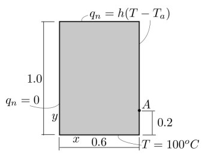
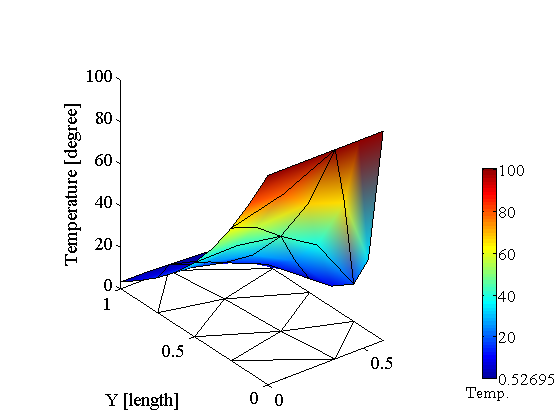
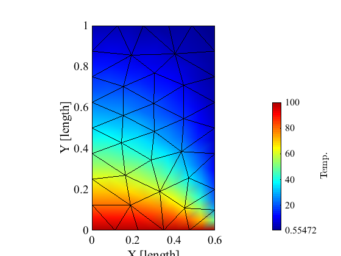
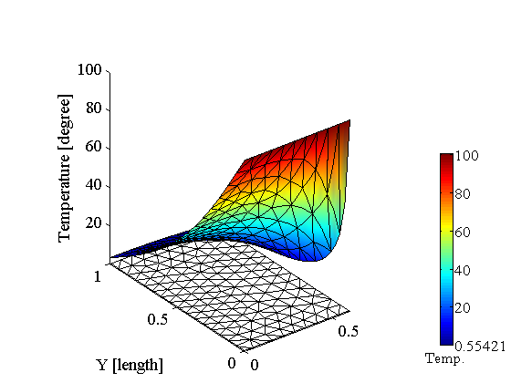
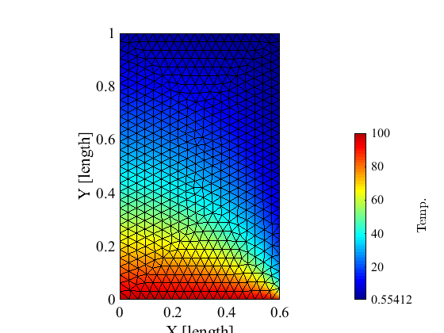
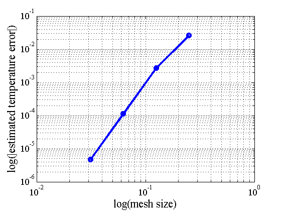
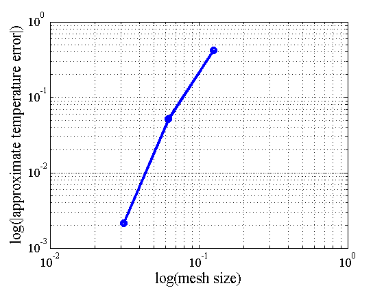

Two-dimensional heat transfer with convection: convergence study
Contents
Link to the m-file.
Description
Consider a plate of uniform thickness, measuring 0.6 m by 1.0 m. On one short edge the temperature is fixed at 100 °C, and on one long edge the plate is perfectly insulated so that the heat flux is zero through that edge. The other two edges are losing heat via convection to an ambient temperature of 0 °C. The thermal conductivity of the plate is 52.0 W/(m .°K), and the convective heat transfer coefficient is 750 W/(m^2.°K). There is no internal generation of heat. Calculate the temperature 0.2 m along the un-insulated long side, measured from the intersection with the fixed temperature side. The reference result is 18.25 °C.
|  |
| Figure 1. Definition of the geometry of the domain |
The reference temperature at the point A is 18.25 °C according to the NAFEMS publication (which cites the book Carslaw, H.S. and J.C. Jaeger, Conduction of Heat in Solids. 1959: Oxford University Press).
The present tutorial will investigate the reference temperature and it will attempt to estimate the limit value more precisely using a sequence of meshes and Richardson's extrapolation.
Solution
function pub_T4NAFEMS_conv
pu=physical_units_struct;% Bring in definitions of physical units kappa=[52 0; 0 52]*pu.W/(pu.M*pu.K); % conductivity matrix h=750*pu.W/(pu.M^2*pu.K);% surface heat transfer coefficient Width=0.6*pu.M;% Geometrical dimensions Height=1.0*pu.M; HeightA=0.2*pu.M; Thickness=1.0*pu.M; mesh_sizes = Height./2.^(2:1:5);% Mesh sizes for the sequence of simulations tolerance =min(mesh_sizes)/1000;
The simulation will be executed inside the loop over all the mesh sizes. The array results will collect the temperatures at point A.
results = [];
for mesh_size = mesh_sizes
Generate the triangle mesh for the current mesh size. Note that we are requesting quadratic triangles to be generated. The domain is given as a sequence of vertices starting at the lower left corner, traversing the boundary in counterclockwise sense. Edge 1 is between the first and the second vertex and so on.
[fens,fes,groups,edge_fes,edge_groups]=targe2_mesher_vl(... [0,0; Width,0; Width,HeightA; Width,Height; 0,Height; ],... Thickness,struct('mesh_size',mesh_size,'quadratic',true));
Set up the model data. The nodes:
clear model_data
model_data.fens =fens;
The region: note our use of six point quadrature for the quadratic triangles.
clear region region.conductivity =kappa; region.fes= fes; region.integration_rule =tri_rule(struct('npts',6)); model_data.region{1} =region;
The convection boundary condition is applied along the edges 2,3,4. The elements along the boundary are quadratic line elements L3. The order-four Gauss quadrature is sufficiently accurate.
clear convection convection.ambient_temperature=0; convection.surface_transfer_coefficient =h; convection.fes = subset(edge_fes,[edge_groups{2},edge_groups{3},edge_groups{4}]); convection.integration_rule=gauss_rule(struct('dim',1,'order',4)); model_data.boundary_conditions.convection{1} = convection;
The prescribed temperature is applied along edge 1 (the bottom edge in Figure 1)..
clear essential
essential.temperature=100;
essential.fes = subset(edge_fes,[edge_groups{1}]);
model_data.boundary_conditions.essential{1} = essential;
The model data is defined, solve for the temperatures.
model_data =heat_diffusion_steady_state(model_data);
Collect the temperature at the point A [coordinates (Width,HeightA)].
results =[results,gather_values(model_data.temp,fenode_select(fens,... struct('box',[ Width,Width,HeightA,HeightA],'inflate', tolerance)))];
Plot the temperature as a raised surface.
model_data.postprocessing.z_scale = 0.01;
heat_diffusion_plot_raised_surface(model_data);
    end
These are the computed results for the temperature at point A:
results
results = 1.7785e+01 1.8207e+01 1.8258e+01 1.8256e+01
Richardson extrapolation is used to estimate the true solution from the results for the finest three meshes.
[xestim, beta] = richextrapol(results(end-2:end),mesh_sizes(end-2:end));
disp(['Estimated true solution for temperature at A: ' num2str(xestim) ' degrees'])
Estimated true solution for temperature at A: 18.256 degrees
Plot the estimated true error.
figure
loglog(mesh_sizes,abs(results-xestim)/xestim,'bo-','linewidth',3)
grid on
xlabel('log(mesh size)')
ylabel('log(|estimated temperature error|)')
set_graphics_defaults
 The estimated true error has a slope of approximately 4 on the log-log scale.
Plot the absolute values of the approximate error (differences of successive solutions).
figure
loglog(mesh_sizes(2:end),abs(diff(results)),'bo-','linewidth',3)
grid on
xlabel('log(mesh size)')
ylabel('log(|approximate temperature error|)')
set_graphics_defaults
 Discussion
The last segment of the approximate error curve is close to the slope of the estimated true error. Nevertheless, it would have been more reassuring if the three successive approximate errors were located more closely on a straight line.
The use of uniform mesh-size meshes is sub optimal: it would be more efficient to use graded meshes. The tutorial pub_T4NAFEMS_conv_graded addresses use of graded meshes in convergence studies.
end